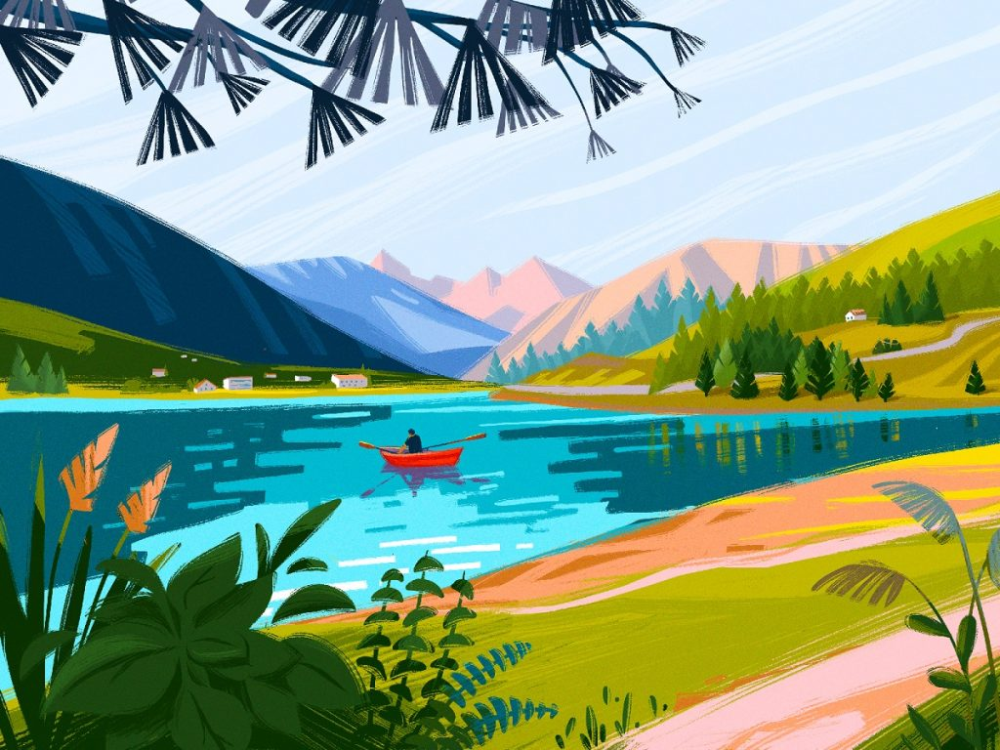
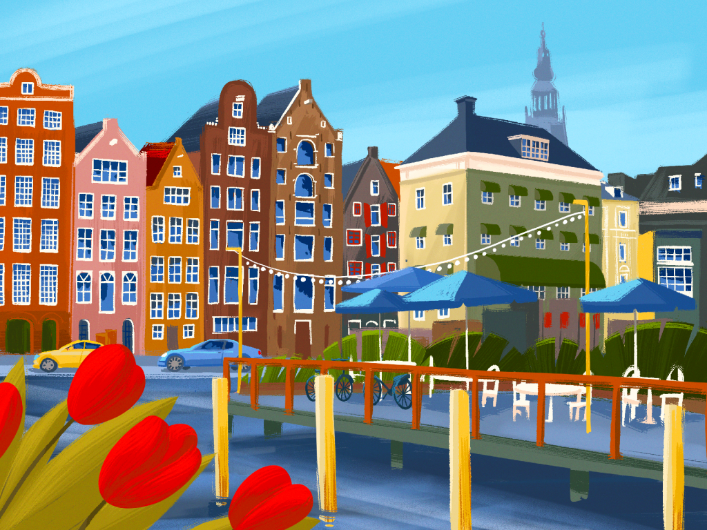
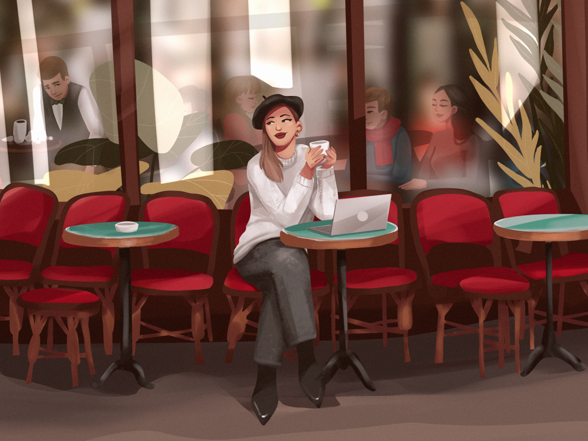
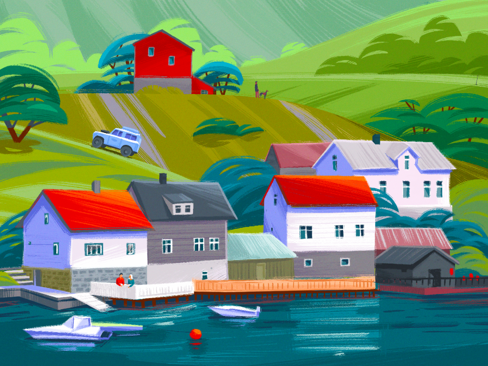
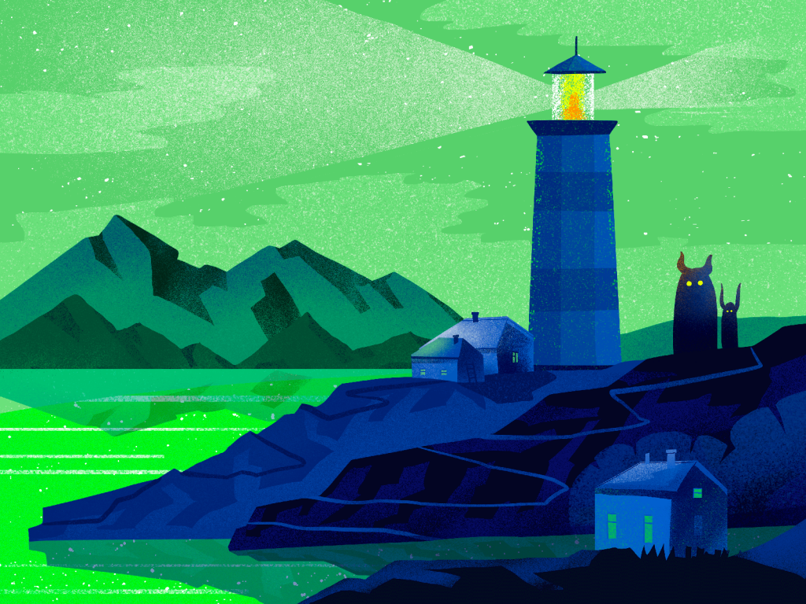
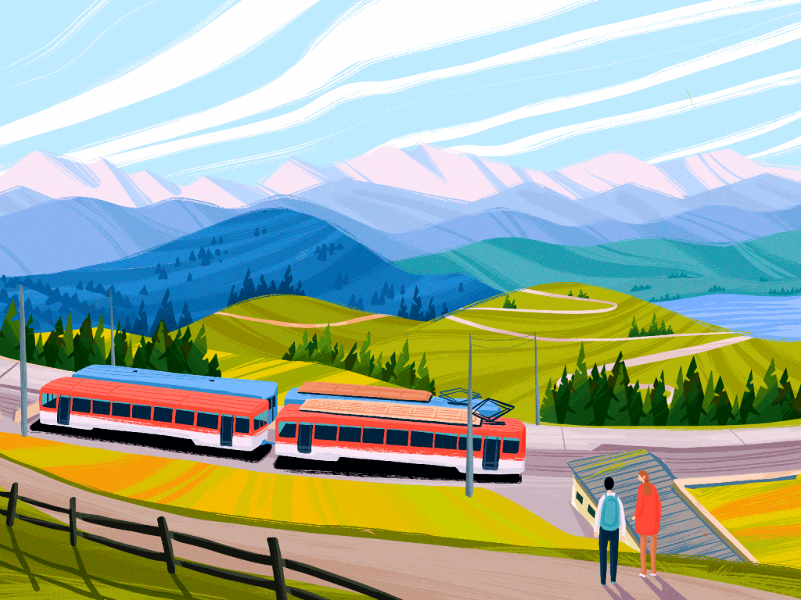
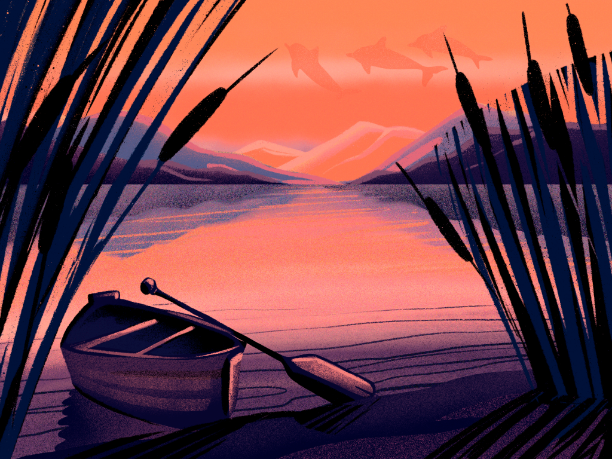
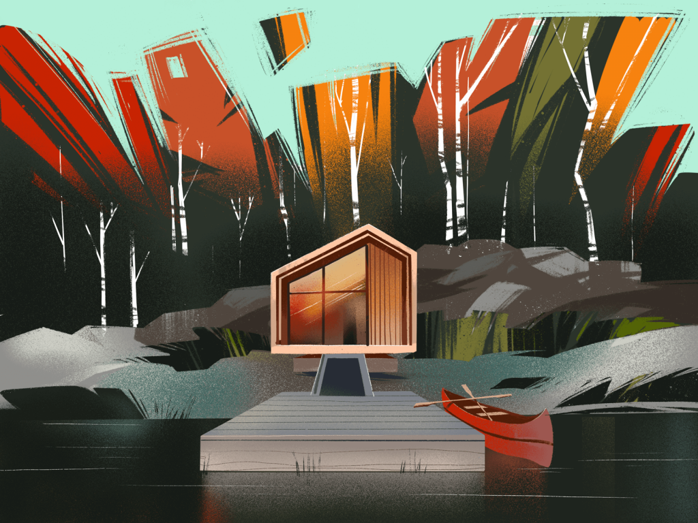

Tubik Studio Digital Illustration
Transform messy journals, late-night notes, and fleeting thoughts into a living celestial constellation. Where ideas breathe, connect, and remember.
Test the cognitive engine right here. Choose a reflection below or type your raw notes to see how The Mirror crystallizes them into connected knowledge.
Before thoughts become digital constellations, they begin as quiet ink on cotton paper. Explore the dual-page manuscript where physical reflection directly informs synthetic intelligence.
Sunrise Deep Focus Block
"Capture the fleeting moments. The weight of thought on paper — and the quiet patterns that emerge at sunrise before the world begins demanding answers."
"Your handwritten reflections consistently correlate physical morning solitude with architectural breakthroughs. Temporal isolation functions not as avoidance, but as your primary creative engine."
Every deep reflection is shaped by the atmosphere around us. Curated digital landscapes and city views by Tubik Studio, paired with reflective journal memories.

Tubik Art
Tubik Art
Tubik Art
Tubik Art
Tubik Art
Tubik Art
Tubik Art
Tubik ArtThe Mirror is built with specialized intelligence workflows designed for reflective depth.
Record stream-of-consciousness audio memos while on walks or in transit. The Mirror analyzes acoustic cadence, emotional inflection, and semantic themes to anchor glowing nodes.
Drag the scrubber below to witness your ideas grow from 2024 to 2026.
Hover over the nodes above to inspect how non-obvious thematic links are surfaced across months of journal entries.